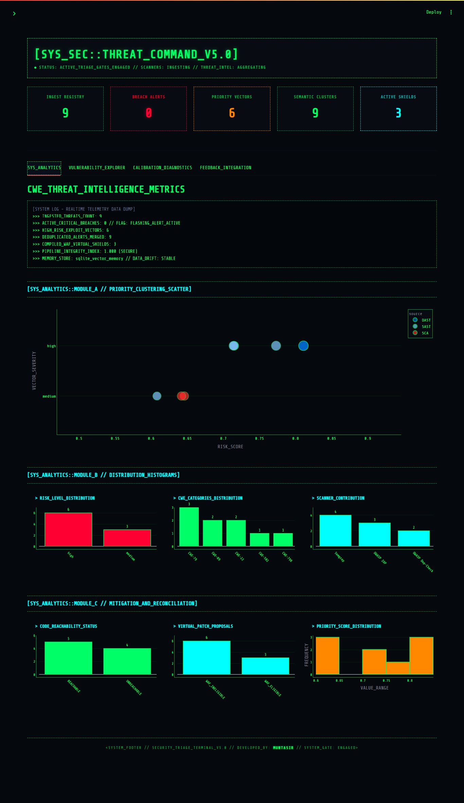
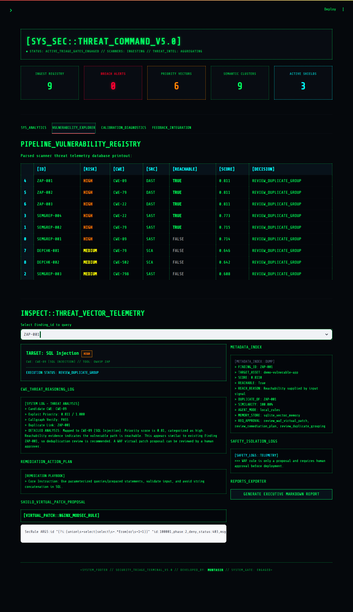
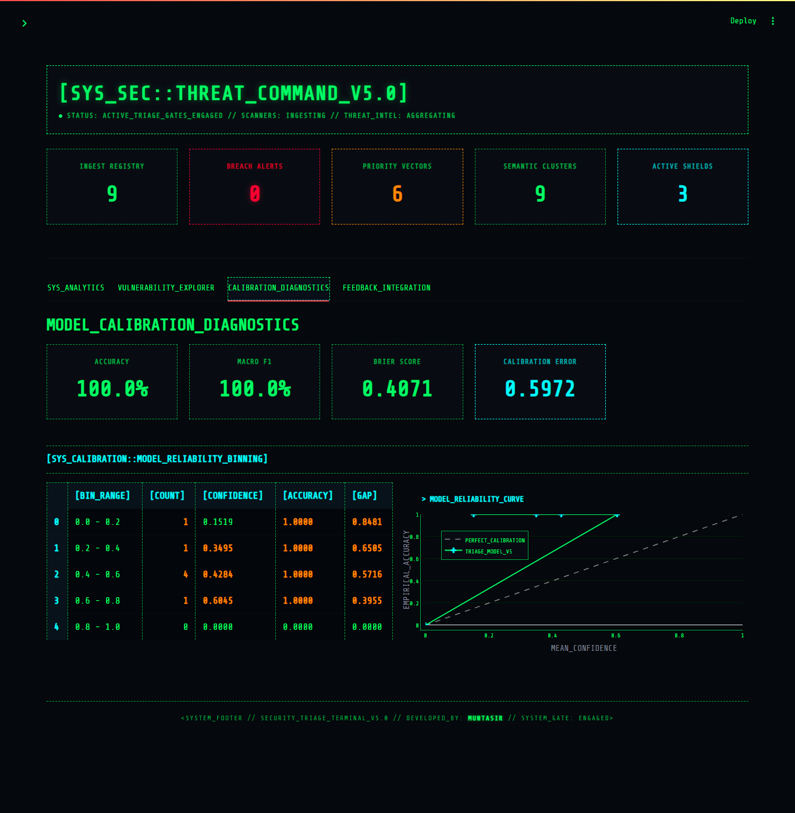
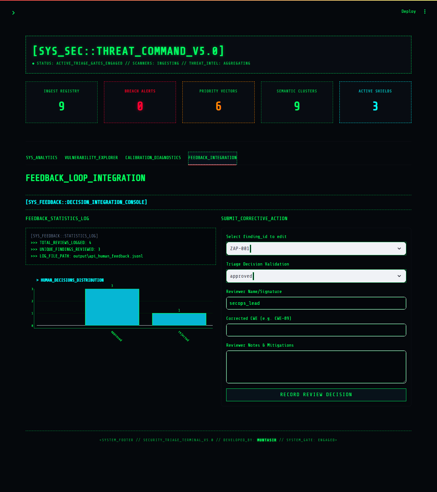

Vulnerability AI Triage Lab v5.0
A runnable AppSec AI portfolio project that ingests scanner findings, normalizes them to CWE, deduplicates similar issues with vector-style memory, scores priority with explainable evidence, generates triage/fix recommendations, and enforces WAF/human-approval safety gates.
v5 focuses on the senior-role gaps: calibration, auditability, feedback loops, threat-intelligence enrichment, and reachability evidence.
What v5 Adds
| Feature | Status |
|---|---|
| CWE calibration metrics | Accuracy, macro-F1, Brier score, ECE, confidence bins |
| Threat-intelligence enrichment | Local exploit-likelihood fixture integrated into scoring evidence |
| Callgraph-style reachability fixture | Simulates CodeQL/Joern integration contract without heavy dependencies |
| Audit log | CLI can write append-only JSONL decision records |
| Feedback-to-training loop | Human feedback can generate augmented CWE training data |
| MCP-style tool contracts | Local contracts for future MCP server/tool integration |
| v5 benchmark command | Full triage benchmark + optional calibration benchmark |
| v5 architecture documentation | reports/v5_architecture_design.md |
v5 keeps all v4 features: scanner adapters, vulnerable demo app, Streamlit dashboard, FastAPI API, Docker Compose, ML classifier, SQLite memory, WAF safety gate, and tests.
Dashboard Preview
The interactive Streamlit dashboard is designed as a real SecOps hacking console terminal, featuring custom neon-styled telemetry plots and a military-cockpit style vulnerability debugger.

Core Operational Cockpit Views
| Module Screen | Preview | Description |
|---|---|---|
| System Analytics |  |
Real-time threat telemetry data dump, risk distribution histogram, CWE categories count, and code reachability statistics. |
| Vulnerability Explorer |  |
Telemetry database printout table, detailed reasoning logs, remediation playbook, WAF rules generator, and metadata dump. |
| Model Calibration Diagnostics |  |
Model reliability curve plotting confidence vs accuracy against a perfect calibration reference, alongside calibration stats. |
| Feedback Loop Integration |  |
Human corrective actions submission form and reviews telemetry log. |
Architecture
Security scanner outputs
Semgrep / OWASP ZAP / Dependency-Check
↓
Scanner adapters
↓
Canonical VulnerabilityFinding schema
↓
CWE normalization: rules or ML classifier
↓
Threat-intelligence enrichment
↓
Entity extraction
↓
Vector-style memory deduplication
↓
Callgraph/reachability gate
↓
Bayesian-style priority scoring
↓
Local or optional LLM triage agent
↓
WAF proposal gate
↓
Human approval policy
↓
Audit log / feedback loop / API / dashboard / reports / benchmark
Quick Start
Windows
Linux / macOS
Install dependencies:
Train the ML CWE classifier:
python -m app.ml.train_cwe_classifier --input data/cwe_training_findings.jsonl --output models/cwe_tfidf_logreg.joblib --metrics output/cwe_training_metrics.json
Generate canonical findings from scanner fixtures:
Run the v5 AI pipeline with audit logging:
python -m app.cli --input output/scanner_findings_all.json --use-ml --memory-backend sqlite --memory-file output/v5_memory.sqlite --output output/v5_results_ml.json --report output/v5_report_ml.md --audit-log output/v5_audit_log.jsonl --pretty
Run the v5 calibration report:
python -m app.evaluation.model_calibration --input data/sample_findings_all.json --labels data/eval_labeled_findings.json --output output/v5_cwe_calibration_metrics.json --report output/v5_cwe_calibration_report.md
Run the combined v5 benchmark:
python -m app.evaluation.full_benchmark_v5 --use-ml --output output/v5_full_benchmark_metrics.json --report output/v5_full_benchmark_report.md
Run all v5 demo steps:
On Windows:
Run the API
Open:
Useful endpoints:
| Endpoint | Purpose |
|---|---|
POST /triage |
Triage one finding |
POST /triage/batch |
Triage a list of findings |
GET /demo/scanner-fixtures |
Convert bundled scanner fixtures into canonical findings |
POST /demo/scanner-fixtures/triage |
Run full triage over bundled scanner fixtures |
GET /memory/summary |
Check persistent memory summary |
POST /feedback |
Add human review feedback |
GET /feedback/summary |
Summarize feedback |
GET /mcp/tool-contracts |
Show MCP-style tool contracts |
Run the Dashboard
First create scanner findings:
python -m app.scanners.run_all --output output/scanner_findings_all.json
python -m app.cli --input output/scanner_findings_all.json --use-ml --output output/v5_results_ml.json --pretty
Then run:
Open:
Calibration Metrics
v5 adds model-confidence evaluation:
| Metric | Why it matters |
|---|---|
| Accuracy | Overall CWE classification correctness |
| Macro-F1 | Handles imbalanced CWE classes better than accuracy alone |
| Multiclass Brier score | Measures probabilistic error |
| Expected Calibration Error | Measures whether confidence matches real correctness |
| Reliability bins | Shows confidence bucket vs actual accuracy |
This is important because the target job asks for calibrated scoring, not only ranking.
Feedback Retraining Loop
After collecting feedback through the API, convert corrected feedback into training data:
python -m app.feedback.build_training_set --base data/cwe_training_findings.jsonl --results output/v5_results_ml.json --feedback output/api_human_feedback.jsonl --output output/cwe_training_augmented_from_feedback.jsonl
Then retrain:
python -m app.ml.train_cwe_classifier --input output/cwe_training_augmented_from_feedback.jsonl --output models/cwe_tfidf_logreg.joblib --metrics output/cwe_training_metrics_after_feedback.json
Scanner Integration
Offline fixture mode
These commands work even if the scanner tools are not installed:
python -m app.scanners.run_semgrep --sample --output output/semgrep_findings.json
python -m app.scanners.run_zap --sample --output output/zap_findings.json
python -m app.scanners.run_dependency_check --sample --output output/dependency_check_findings.json
Real scanner mode
If installed, you can run real tools:
python -m app.scanners.run_semgrep --target demo-vulnerable-app --output output/semgrep_findings.json
python -m app.scanners.run_zap --target http://localhost:5000 --output output/zap_findings.json
python -m app.scanners.run_dependency_check --target demo-vulnerable-app --output output/dependency_check_findings.json
Demo Vulnerable App
The project includes:
Intentional vulnerabilities:
| Route / Item | Vulnerability | CWE |
|---|---|---|
/user?id=1 |
SQL Injection | CWE-89 |
/search?q=test |
Reflected XSS | CWE-79 |
/download?file=sample.txt |
Path Traversal | CWE-22 |
API_KEY in source |
Hard-coded secret | CWE-798 |
requirements.txt |
Vulnerable dependency examples | SCA/CVE |
Do not deploy the demo vulnerable app publicly.
Docker Compose
Services:
| Service | URL |
|---|---|
| API | http://localhost:8000/docs |
| Dashboard | http://localhost:8501 |
| Demo vulnerable app | http://localhost:5000 |
Tests
Explanation
Designed the system as a modular vulnerability intelligence pipeline. Scanner adapters isolate schema inconsistencies from SAST, DAST, and SCA tools. The canonical schema feeds CWE normalization, threat-intelligence enrichment, entity extraction, deduplication, reachability checks, and explainable priority scoring. The triage agent generates human-readable guidance, but safety-sensitive actions like WAF rule eligibility are enforced by deterministic code outside the LLM. v5 adds calibration metrics, audit logs, and a feedback-to-training loop so the project demonstrates not only modeling but evaluation and governance discipline.
Current Limitations
- The bundled scanner outputs are fixtures unless real tools are installed.
- The ML classifier is still a small baseline model, not a production transformer.
- Callgraph reachability is a fixture-based simulation, not full CodeQL/Joern data-flow analysis.
- WAF rules are proposals only; there is no automatic deployment.
- LLM integration is optional and safely falls back to local triage.
- Calibration metrics are demonstrated on a small dataset; production claims require historical labeled data.
Recommended v6 Direction
- Replace TF-IDF classifier with fine-tuned Transformer / CodeBERT.
- Use Qdrant or pgvector as default vector DB.
- Add real CodeQL or Joern reachability output parser.
- Add MLflow experiment tracking and model registry.
- Add CI benchmark gates that fail if WAF false positive rate or calibration worsens.
- Add full MCP server runtime for tool-using remediation agents.